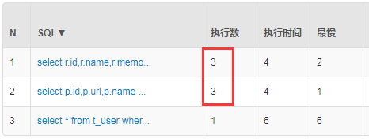
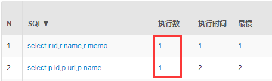
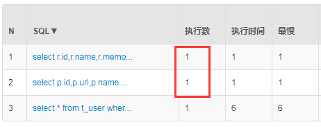

在Shiro中加入缓存可以使权限相关操作尽可能快，避免频繁访问数据库获取权限信息，因为对于一个用户来说，其权限在短时间内基本是不会变化的。Shiro提供了Cache的抽象，其并没有直接提供相应的实现，因为这已经超出了一个安全框架的范围。在Shiro中可以集成常用的缓存实现，这里介绍基于Redis和Ehcache缓存的实现。
在《Spring-Boot-shiro权限控制》中，当用户访问”获取用户信息”、”新增用户”和”删除用户”的时候，后台输出了三次打印信息，如下所示：
1 | 用户mrbird获取权限-----ShiroRealm.doGetAuthorizationInfo |
说明在这三次访问中，Shiro都会从数据库中获取用户的权限信息，通过Druid数据源SQL监控后台也可以证实这一点：

这对数据库来说是没必要的消耗。接下来使用缓存来解决这个问题。
Redis
引入Redis依赖
网络上已经有关于Shiro集成Redis的实现，我们引入即可：
1 | <!-- shiro-redis --> |
配置Redis
我们在application.yml配置文件中加入Redis配置：
1 | spring: |
接着在ShiroConfig中配置Redis：
1 | public RedisManager redisManager() { |
上面代码配置了RedisManager，并将其注入到了RedisCacheManager中，最后在SecurityManager中加入RedisCacheManager：
1 |
|
配置完毕启动项目，分别访问访问”获取用户信息”、”新增用户”和”删除用户”，可发现后台只打印一次获取权限信息：
1 | 用户mrbird获取权限-----ShiroRealm.doGetAuthorizationInfo |
查看Druid数据源SQL监控：

源码：https://github.com/wuyouzhuguli/Spring-Boot-Demos/tree/master/14.Spring-Boot-Shiro-Redis
Ehcache
Ehcache依赖
加入Ehcache相关依赖：
1 | <!-- shiro ehcache --> |
Ehcache配置
在src/main/resource/config路径下新增一个Ehcache配置——shiro-ehcache.xml：
1 |
|
ShiroConfig配置Ehcache
接着在ShiroConfig中注入Ehcache缓存：
1 |
|
将缓存对象注入到SecurityManager中：
1 |
|
配置完毕启动项目，分别访问访问”获取用户信息”、”新增用户”和”删除用户”，可发现后台只打印一次获取权限信息：
1 | 用户mrbird获取权限-----ShiroRealm.doGetAuthorizationInfo |
查看Druid数据源SQL监控：

SQL只执行了一次，说明缓存成功。
源码连接：https://github.com/wuyouzhuguli/Spring-Boot-Demos/tree/master/15.Spring-Boot-Shiro-Ehcache